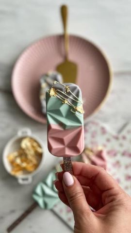

Moja beleška
SačuvanoSastojci
- Sastojci
- Još
Priprema
Sastojke za smesu samo lepo umešati i povezati. Možete kao ja ostaviti beli krem da dodate po kašičicu u sredinu svakog sladoleda, a možete i umešati zajedno sa ostalim sastojcima u smesu. Kapljice bele cokolade otopiti lagano u mikrotalasnoj uz prekide i mešanje ili na pari. Kada se prohladi obojiti bojom po želji, a za čokoladu su najbolje ove boje koje su na bazi cacao buttera. Otopljenu čokoladu uliti u kalup, ostaviti u frižideru da se stegne ( svega par minuta) pa postaviti štapice kroz otvor kalupa. Postupak ponoviti kako bi bili sigurni da je popunjen svaki delić kalupa. Utapkati smesu kojim punite sladolede, pa preliti ostatkom cokolade. Posle hladjenja u frižideru lagano izvucite sladolede iz kalupa. Meni je ovo baš slatka ideja za obradovati dečicu i odlična ideja za proslave dečijih rodjendana. Dečica uvek pre smažu ovo nego parče torte 😍 Hoćete li i vi nekoga obradovati ovim slatkim 🍦..? Koliko vam je lep ovaj oblik 😍😍..?
Originalni opis sa Instagrama
Dijamant sladoled 🍭🍦💓 Volim i one vikende u kojima se isključim od svih obaveza i maltene ceo dan provedem u dvorištu.. Kada se dečica istrče i izigraju, a ja uživam u onim nekim sitnim, a tako bitnim radostima. Volim i prijatelje koji tačno znaju kada da pozovu i samo kažu dolazim, nosim pizzu, ne želim da te vidim danas u kuhinji, upijaćemo vazduh, a tvoje je samo da mi spremiš onu kaficu, znaš koju 🥰 Onda se ja uz još više elana rastrčim u želji da ih bar nekim slatkišem obradujem 😍… i tako su nastali ovi sladoledići uz pomoć malo mašte, ljubavi, ovog fenomenatnog kalupa, pastelnih boja, i malo zlatnih listića od @svet.poslasticara 💓 Sastojci: •200 gr mlevenog keksa •50 gr mlevenih pečenih lešnika •100 gr rendane bele čokolade •65 gr otopljenog putera •50 ml mleka •8 kašičica belog krema Još: •350 gr belih čokoladnih kapljica - ja sam koristila #callebaut čokoladu @chocolateacademybelgrade •boje za čokoladu po želji Sastojke za smesu samo lepo umešati i povezati. Možete kao ja ostaviti beli krem da dodate po kašičicu u sredinu svakog sladoleda, a možete i umešati zajedno sa ostalim sastojcima u smesu. Kapljice bele cokolade otopiti lagano u mikrotalasnoj uz prekide i mešanje ili na pari. Kada se prohladi obojiti bojom po želji, a za čokoladu su najbolje ove boje koje su na bazi cacao buttera. Otopljenu čokoladu uliti u kalup, ostaviti u frižideru da se stegne ( svega par minuta) pa postaviti štapice kroz otvor kalupa. Postupak ponoviti kako bi bili sigurni da je popunjen svaki delić kalupa. Utapkati smesu kojim punite sladolede, pa preliti ostatkom cokolade. Posle hladjenja u frižideru lagano izvucite sladolede iz kalupa. Meni je ovo baš slatka ideja za obradovati dečicu i odlična ideja za proslave dečijih rodjendana. Dečica uvek pre smažu ovo nego parče torte 😍 Hoćete li i vi nekoga obradovati ovim slatkim 🍦..? Koliko vam je lep ovaj oblik 😍😍..? • • • #sladoled #sladoledpops #dezertnastapicu #idejezadezert #slatkisi #slatkirecepti #mojirecepti #icecreampops #icecreampopsicle